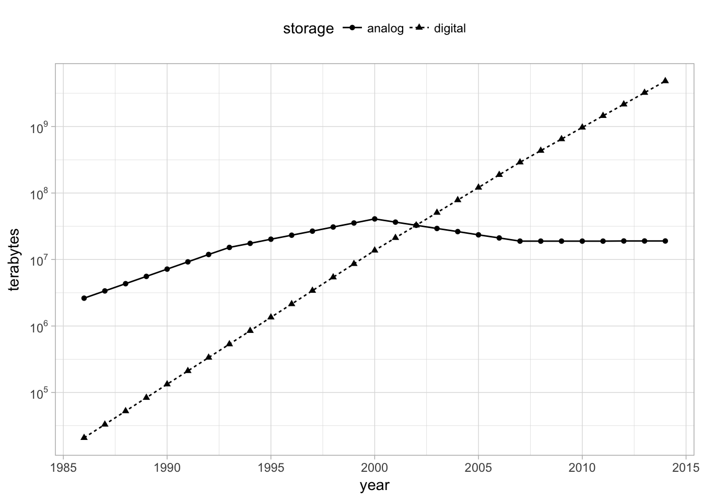

Chapter 12 Introduction
12.1 Overview
Humanity footprint of digital information grows at exponential rates:

FIGURE 12.1: World’s capacity to store information.
Hadoop used disks across machines to process map/reduce operations.
12.2 Spark
“Apache Spark is a fast and general engine for large-scale data processing.”
- Data Processing: Data processing is the collection and manipulation of items of data to produce meaningful information.
- General: Spark optimizes and executes parallel generic code, as in, there are no restrictions as to what type of code one can write in Spark.
This is usually known as
Big Data
or
Big Compute.
12.3 R Language
R is a programming language and free software environment for statistical computing and graphics.

FIGURE 12.2: Interface language diagram by John Chambers from useR 2016.
12.4 R Community
Provides a rich package archive provided in CRAN and Bioconductor: dplyr to manipulate data, cluster to analyze clusters, ggplot2 to visualize data, etc.

FIGURE 12.3: Daily downloads of CRAN packages.